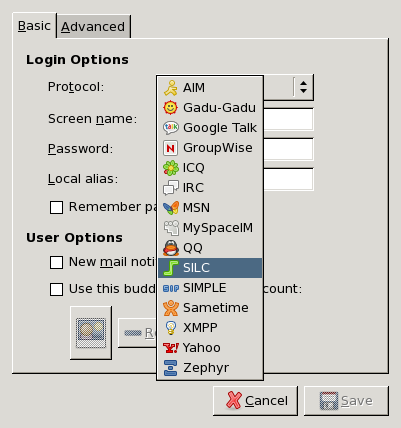
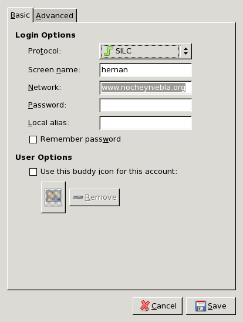
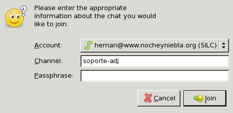

Por favor adopte la política LBM (Leer el Bendito Manual). La documentación de adJ es:
http://pasosdejesus.github.io/basico_adJ utilización básica local y remota.
usuario_adJ, http://pasosdejesus.github.io/usuario_adJ instalación y uso más avanzado como platafora de escritorio y desarrollo
servidor_adJ, http://pasosdejesus.github.io/servidor_adJ como cortafuegos y servidor.
Como adJ es una distribución de OpenBSD los documentos para ese sistema operativo también aplican. Sin embargo buena parte de la documentación se encuentra solo en inglés, recomendamos:
El manual oficial de cada orden, controlador y archivo de configuración puede leerse con la orden
man. Tal manual consta de varias secciones: 1 ordenes generales, 2 llamadas al sistema y números de error, 3 librerías de C, 4 archivos especiales y soporte de hardware, 5 formatos de archivos, 6 juegos, 7 miscelanea, 8 operación y mantenimiento del sistema, 9 kernel. Puede ver por ejemplo la introducción a la sección 6 con man 6 intro. En Internet también puede consultar este manual en http://www.openbsd.org/cgi-bin/man.cgi
Entre los sitios donde se documentan configuraciones o se evalúan algunas herramientas: http://dhobsd.pasosdeJesus.org, http://www.openbsdcolombia.org, https://calomel.org/
Para realizar preguntas por correo electrónico recomendamos la lista de distribución OpenBSD-Colombia http://groups.google.com/group/OpenBSD-Colombia?hl=es
Si tiene una cuenta en github.com empleando un navegador podrá ingresar y utilizar con facilidad: https://gitter.im/pasosdeJesus/adJ
Formule allí sus preguntas sobre el uso de adJ o formule requerimientos.
Para dar soporte en el uso de Aprendiendo de Jesús empleamos el
canal soporte-adJ, en el servidor SILC de
www.nocheyniebla.org
SILC es un protocolo de teleconferencia inspirado en IRC, pero que transmite los mensajes cifrados a un servidor que replica los mensajes a los clientes conectados. Un usuario que se conecte a un servidor, decide a que canales de los disponibles unirse o puede crear uno nuevo al que otros usuarios podrían unirse. Todo lo que alguno de los miembros de un canal escriba en el canal, será transmitido a todos los que se hayan unido a ese canal. SILC también soporta canales privados, canales con clave, el envío de mensajes de texto cifrados a individuos así como transmisión de información multimedia (por ejemplo un tablero gráfico colaborativo). Puede verse más en http://silcnet.org/
Para emplear el servicio debe utilizarse un cliente de silc, en caso de que cuente con un escritorio gráfico recomendamos pidgin, o de contar con un interprete de ordenes el programa silc incluido en
Pidgin es un programa de mensajería instantánea que permite iniciar sesiones sobre varias redes de mensajería al mismo tiempo. Corre sobre sistemas operativos OpenBSD, Linux, macOS y Windows. Es compatible con las siguientes redes de mensajería: AIM, ICQ, Google Talk, Jabber/XMPP, MSN Messenger, Yahoo!, Bonjour, Gadu-Gadu, IRC, Novell GroupWise Messenger, QQ, Lotus Sametime, SILC, SIMPLE, MySpaceIM y Zephyr. Soporta transferencia de archivos, mensajes de ausencia, iconos, emoticones personalizados y notificaciones de escribir.
Puede iniciar con el botón derecho sobre el escritorio en el menú Internet->Pidgin o desde una terminal escribiendo
pidgin. Presionamos botón del ratón sobre Add para adicionar una cuenta. En Protocol elegimos el protocolo SILC.
En Screen name colocamos el nombre con el que se vamos a identificarnos (En el ejemplo, hernan).
En Network digitamos
www.nocheyniebla.org. En la parte superior izquierda, presionamos botón del ratón sobre Advanced.
En Connect server digitamos nuevamente
www.nocheyniebla.org. Además señalamos las dos primeras opciones y la última opción. Presionamos sobre Save.
Al presionar botón del ratón sobre Buddies nos muestra el menú y presionamos sobre Join a chat.

Al presionar el botón del ratón sobre Join a Chat nos muestra un menú. En Channel digitamos
soporte-adJ. Finalmente, en la parte inferior derecha presionamos el botón del ratón sobre join. Y ya podemos empezar a comunicarnos.

Si prefiere emplear un cliente de silc tipo texto, inicie una sesión con:
silc -c www.nocheyniebla.org
Una vez conectado puede dar ordenes iniciados con el símbolo '/', por ejemplo:
- /help
presenta ayuda sobre ordenes disponibles.
- /quit
Para salir del cliente.
- /join soporte-adJ
Para unirse al canal soporte-adJ
- /list
Lista de canales disponibles
- /users soporte-adJ
Lista usuarios conectados al canal soporte-adJ
- /smgs pablo Me ayudas?
Envía "Me ayudas?" como mensaje privado y firmado para el usuario pablo.